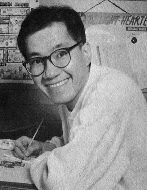
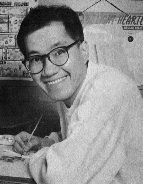
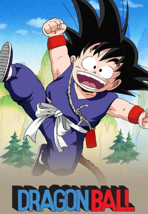
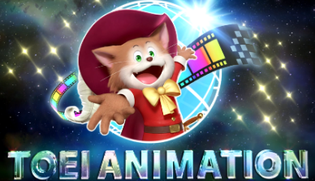

Akira Toriyama, o criador de Dragon Ball
Akira Toriyama (鳥山 明 Toriyama Akira?), nascido em Nagoya em 5 de abril de 1955, é um autor japonês de mangá,
conhecido por ser o criador de séries como Dragon Ball e Dr. Slump.
Akira iniciou sua carreira em 1978 com a história Wonder Island publicada na Weekly Shonen Jump, depois fez
outros mangás: Highlight Island, seguido por Tomato Girl Detective.
Ele provavelmente é mais conhecido por ser o autor da famosa série Dragon Ball. Essa série é conhecida como
um dos eixos para o que foi conhecido como "a Era Dourada da Jump". Seu sucesso "forçou" Toriyama a
trabalhar em Dragon Ball de 1984 a 1995. Durante esse período de onze anos, ele produziu 42 volumes. Cada
volume tem uma média de 200 páginas, de maneira que toda trama de Dragon Ball se estende por quase 10,000
páginas. Além disso, o sucesso de Dragon Ball levou a uma série de anime para televisão, filmes de
longa-metragem, Video games, e um mega-merchandising.
Como, quando e onde, A série Dragon Ball foi criada

Dragon Ball é um mangá japonês criado por Akira Toriyama e publicado em 42 volumes, Dragon Ball apareceu
pela primeira vez nas páginas da revista Shounen Weekly em 1985. Contava a história de Son Goku, um
garotinho com um rabo de macaco que se junta a seus amigos em uma jornada para encontrar as 'esferas do
dragão'.
Inspiração
O primeiro grande sucesso veio Akira Toriyama no mundo do mangá veio em 1980 com Dr. Slump. O mangá contava
a história de uma garota androide tão bem feita que todos achavam que ela era uma garota de verdade com
superpoderes.
A história foi o laboratório perfeito para o jovem autor começar a explorar elementos que mais tarde seriam
fundamentais para a criação do mundo de Dragon Ball. Em Dr. Slump apareceram os primeiros animais
antropomórficos, andróides e mundos futuristas que mais tarde dariam a Dragon Ball seu estilo único.
Para seu próximo projeto, Toriyama diz que contou com a ajuda de sua esposa, que tinha um grande
conhecimento dos contos tradicionais chineses. Um em particular, O Rei Macaco, chamava sua atenção.
Ele também adaptou os poderes do rei macaco ao seu personagem principal, incluindo a capacidade de "surfar"
nas nuvens.
Dragon Ball se inspirou em muitas fontes, incluindo a comédia de Jackie Chan de 1978, O Grande Mestre dos
Lutadores, na qual um jovem mimado aprende a complicada forma de arte marcial do "macaco bêbado" de seu tio.

Empresa que anima Dragon Ball
A Toei Animation Co., Ltd. (東映アニメーション株式会社 Tōei Animēshon Kabushiki-gaisha?) é um estúdio de animação que faz
parte da Toei Company. Hayao Miyazaki, Isao Takahata e Yoichi Kotabe já trabalharam na Toei Animation. O
estúdio é responsável por produzir obras como Sally the Witch, GeGeGe no Kitarō, Mazinger Z, Galaxy Express
999, Cutie Honey, Dr. Slump, Dragon Ball, Os Cavaleiros do Zodíaco, Sailor Moon, Slam Dunk, Hokuto no Ken,
Jigoku Sensei Nube, Ghost Sweeper Mikami, Gulliver Boy, Digimon, One Piece, Toriko, World Trigger, The
Transformers (entre 1984 1990, incluindo várias produções exclusivas japonesas) e a franquia Pretty Cure.